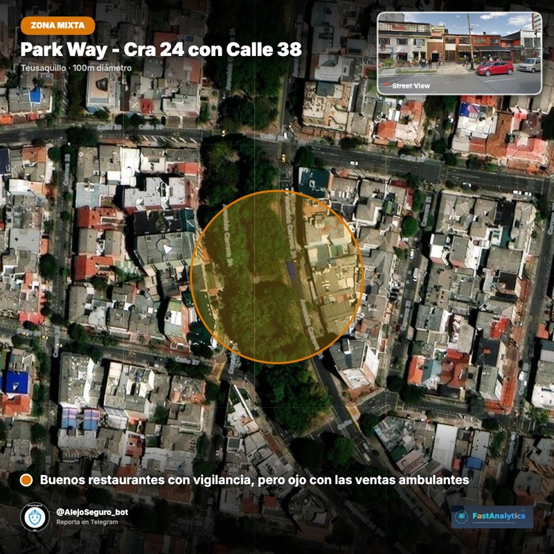

Nuestros productos
Herramientas que ya están en la calle recogiendo datos y generando resultados.

AlejoSeguro
¿Cómo se siente la seguridad en tu barrio? Este bot recoge esa respuesta de miles de ciudadanos en Bogotá. Anónimo, en 2 minutos, directo desde Telegram.



- Anónimo y en solo 2 minutos
- Ya funciona en Bogotá y Región Metropolitana
- Miles de respuestas ciudadanas recolectadas
AlejoGeo
Recolección inteligente de datos espacio-temporales directamente del territorio. AlejoGeo captura audio, texto, video e imágenes georreferenciadas a través de un chatbot. Cruza esa información con bases de datos vectoriales para encontrar patrones que no se ven a simple vista. Tú recibes un chat donde preguntas todo lo que necesitas saber de tu entorno.
- Salud: cruza quejas hospitalarias con condiciones del territorio
- Minero-energético: monitoreo de conflictos con comunidades
- Construcción: diagnóstico de convivencia en propiedades horizontales
- Educación: análisis del entorno escolar y percepción de seguridad
- Informes PDF, dashboards y chat con IA para toma de decisiones
Ceci Teaches
Un profesor disponible a cualquier hora. Ceci usa IA para crear experiencias de aprendizaje personalizadas, directo en Telegram. Pregunta lo que quieras.
- Responde preguntas al instante
- Se adapta a tu nivel y ritmo
- Disponible 24/7 en Telegram
VIGÍA
¿Y si pudieras anticipar dónde va a ocurrir el próximo delito? VIGÍA analiza patrones en tiempo real para que las operaciones lleguen primero.


- Anticipa dónde y cuándo actuar
- Detecta patrones que el ojo humano no ve
- Optimiza recursos operativos

¿Quieres ver más?
Tips, casos reales y herramientas de IA que compartimos gratis.